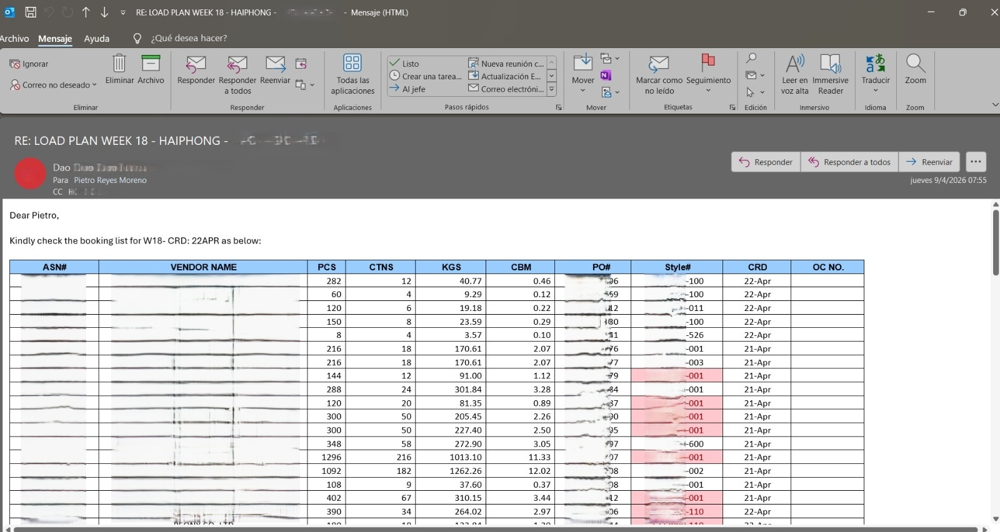
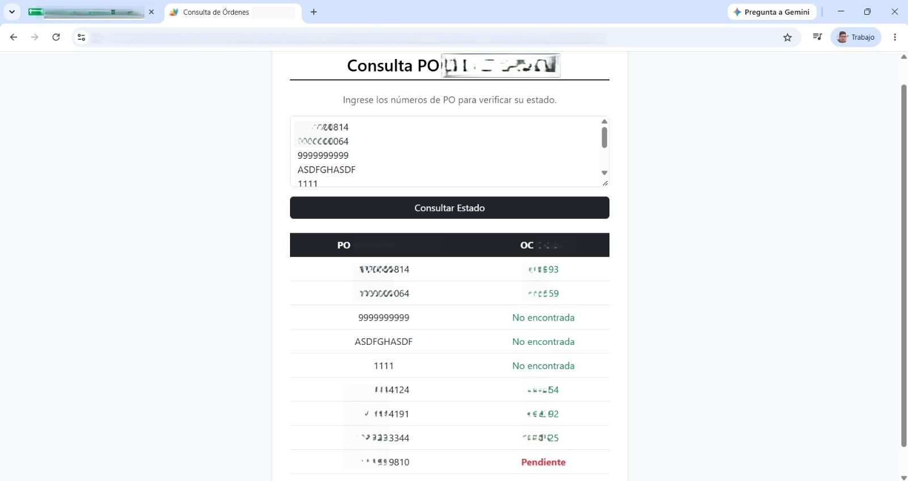

El problema
Un proveedor internacional necesitaba conocer la Orden de Compra (OC) asociada a su Orden de Producción (PO) antes de poder generar la Orden de Embarque (Shipping Order). Esta consulta se repetía cada semana con hasta tres proveedores distintos, cada uno enviando entre una y tres solicitudes, y las listas de POs a revisar podían ir de un puñado hasta más de cien. Todo se resolvía por correo, y el ciclo completo podía tomar casi toda la semana: el proveedor consultaba el lunes, el coordinador revisaba la información manualmente y respondía ese mismo martes, el proveedor veía la respuesta el miércoles y generaba la SO justo a tiempo para que se reflejara en el sistema el jueves y se cargara a seguimiento el viernes — el mismo día en que, por requerimiento naviero, debía enviarse la solicitud de allocation (espacio en nave) para la semana subsiguiente. Quedaba un solo día de margen, y cualquier imprevisto en el camino complicaba toda la gestión.

Qué hice y por qué
El cuello de botella no era la información en sí, sino la espera por una respuesta manual. Propuse una herramienta de autoconsulta (Google Sheets + Google Apps Script) para que el proveedor pudiera resolver la relación OC↔PO por su cuenta, sin esperar un correo: puede pegar un listado completo de POs copiado directamente desde Excel, sin límite de cantidad, y consultar el estado de todas a la vez. El equipo de implementación había estimado unos ocho meses para una solución completa; en lugar de esperar ese desarrollo, pedí autorización para construir un piloto de alcance acotado — quedó operativo en menos de una semana.

El resultado
El piloto pasó a producción y hoy es la plataforma de consulta estándar del equipo, con actualización semanal. El proveedor pasó de generar la Orden de Embarque el miércoles (o jueves, en muchos casos) a generarla el lunes (o martes, a más tardar) — tres días completos de margen frente al plazo semanal de allocation naviero. Las excepciones (POs sin OC asociada, normalmente de muestras o marketing) se resuelven apenas se detectan.
El libro de consulta original también se mantiene vivo: hoy lo uso para búsquedas manuales rápidas, y cada consulta sobre una PO sin OC asociada queda registrada con fecha y hora, lo que ayuda a priorizar su creación.
Qué aprendí
No siempre la solución correcta es la más completa. Un piloto acotado, operativo en menos de una semana, resolvió el problema real antes de que un desarrollo de ocho meses llegara a existir — y terminó siendo la base de lo que el equipo usa hoy.